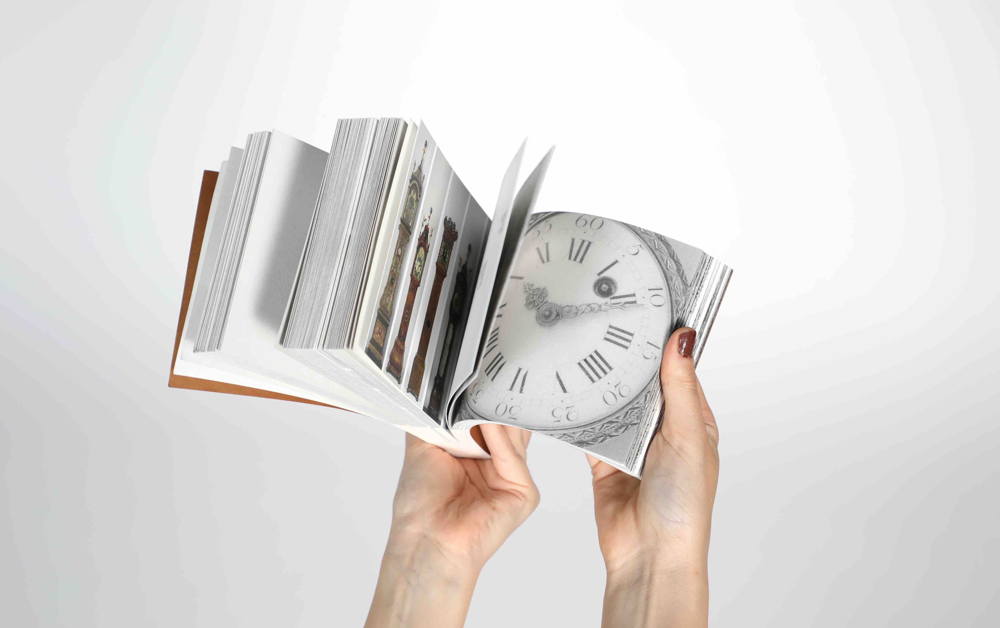
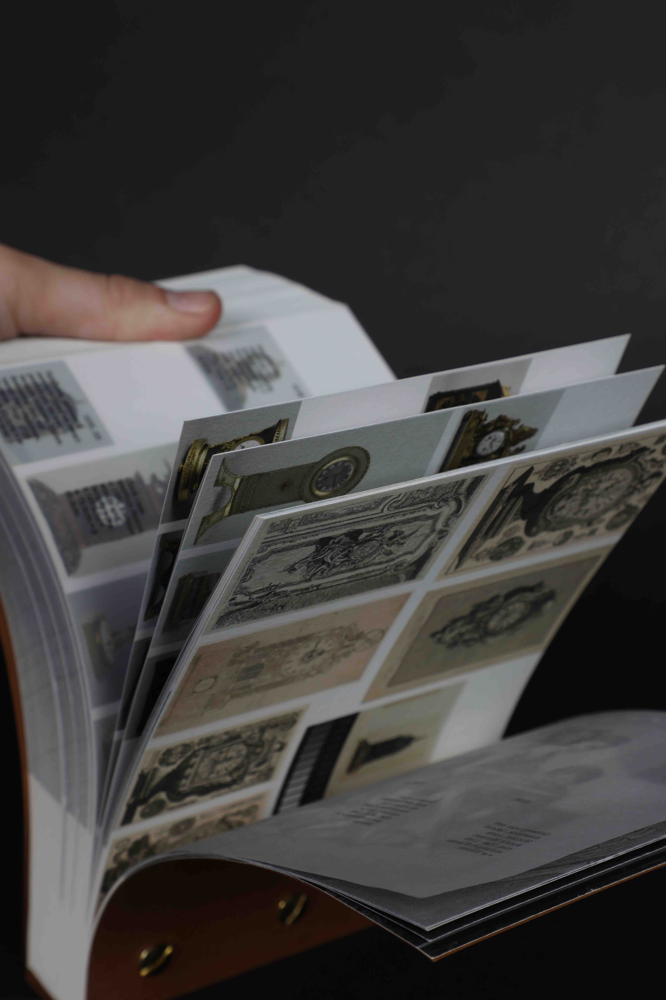
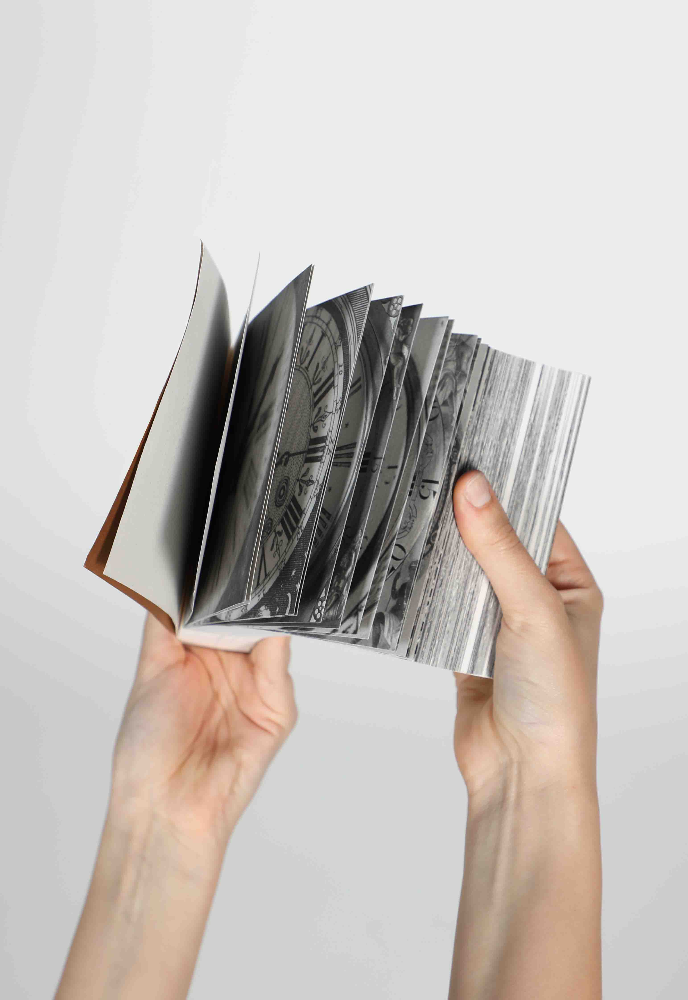
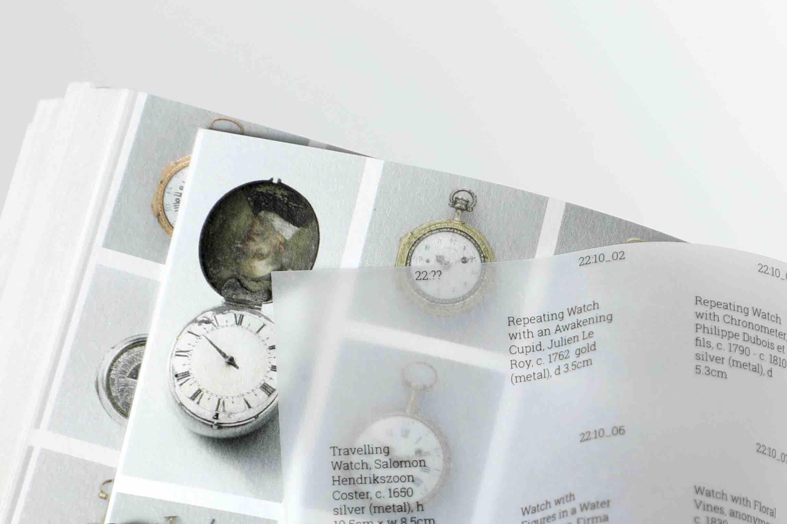
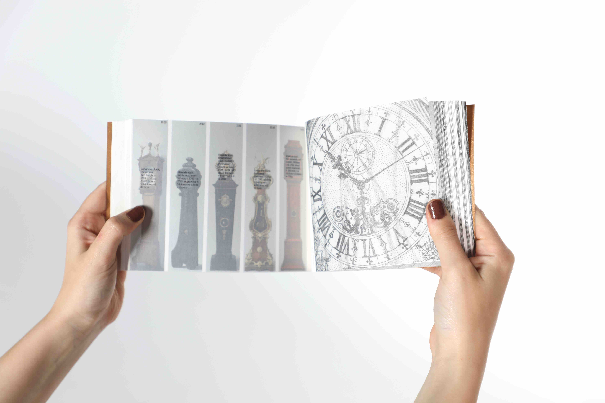
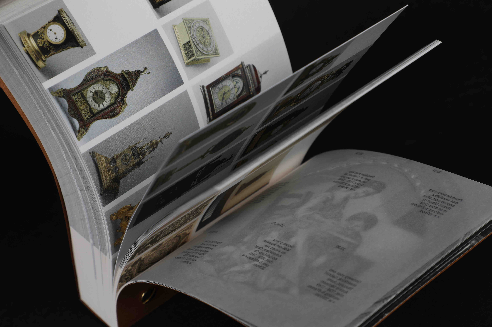
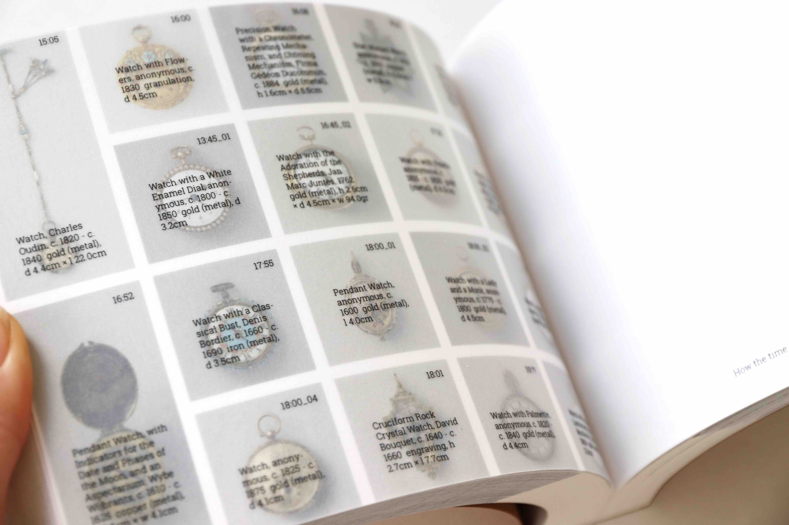
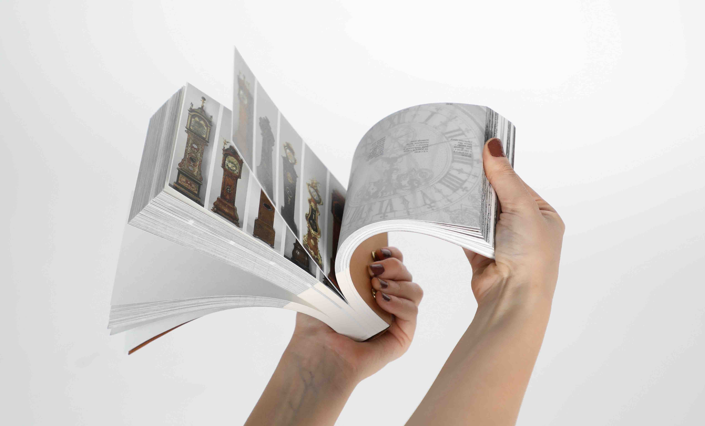
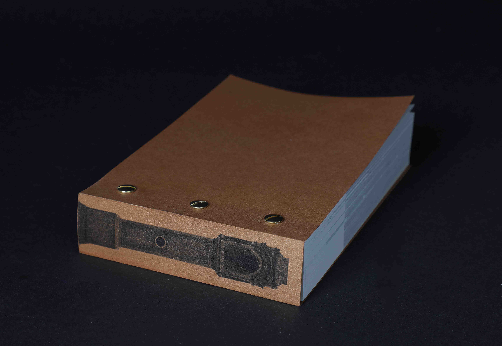
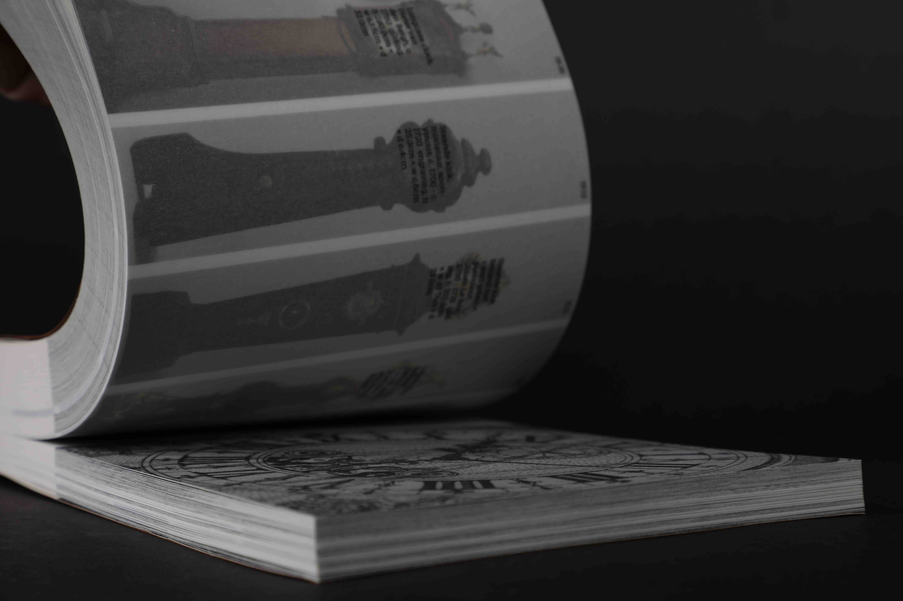

Publication
December 2022






Typeface: Stone Serif ITC Pro
All contents are sourced
from the Rijksmuseum Archive
Guided by Jeremy Jansen
ArtEZ
2022

How the time stopped A flip-book How the time stopped is based on the Rijksmuseum archive. The design originated from observing the different times displayed on clocks captured in archival photographs. The photographs are organized in the order of time: from 12 o’clock onwards. However, as the archive includes clocks and watches missing one or both hands, the perception of time gradually dissolves as the pages are flipped. At first, time passes as usual, then only approximate hours can be read, and by the end, the clocks lose their ability to indicate time entirely. Pages showing an overview of the archive are printed on thicker paper, interrupting the flow of flipping and highlighting the gradual loss of time.


